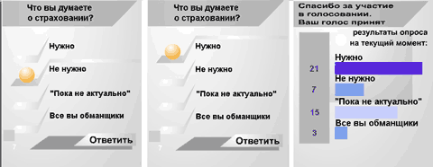
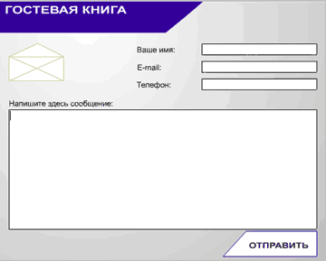

Создание элементов сайтов с использованием Flash
Дмитрий Корепанов, Byte Россия
Если как следует вдуматься в смысл названия статьи, становится понятно,
насколько широкая тема здесь обозначена. Под элементами сайтов можно понимать
все, что мы видим на бесчисленном количестве страниц Интернета, причем
большинство элементов Web-страниц можно реализовать средствами технологии Flash.
В одной статье охватить все аспекты этой темы нереально, поэтому мы лишь
обозначим основные направления и попробуем разобраться, почему в том или ином
случае следует или не следует применять технологию Flash.
Если вы до сих пор не применяли Flash в своих разработках, возможно, эта
статья откроет перед вами новый способ Web-строительства. Если вы только
начинаете заниматься разработкой проектов в Интернете, эта статья тоже для вас.
Познакомьтесь с технологией Flash поближе, и, весьма вероятно, она станет для
вас основным и самым любимым инструментом.
В любом случае использование Flash - мощное средство в борьбе за клиентов. На
сегодня около 95% пользователей Интернета имеют возможность просматривать Flash,
и эта цифра неуклонно стремится к 100%. Версии браузеров, начиная с 4.0, имеют
встроенные модули (plug-ins), а установка и обновление встроенного модуля
занимает от 20 секунд до нескольких минут, в зависимости от качества линии.
Следует отметить, что в предложениях работодателей на популярных досках
объявлений в Интернете знание технологии Flash весьма приветствуется, а зачастую
является обязательным условием. Этот навык неуклонно рвется в "первые строчки
хит-парадов" среди других умений и знаний в области средств разработки и
технологий. Также как сейчас трудно представить дизайнера-полиграфиста без
владения CorelDRAW или Web-мастера без умения написать или использовать
простейший скрипт CGI, так скоро трудно будет представить разработчика
Web-решений без знания Flash.
Вспомним, как развивался Интернет в плане использования различных средств
передачи информации. Текстовые документы были первыми. С увеличением пропускной
способности линий в Сеть пришла графика. Надо сказать, что графика в ее
растровом представлении до сих пор довольно негативно влияет на трафик, однако
представить Сеть без графических элементов на страницах уже трудно.
Практически одновременно с появлением статичной графики начались активные
попытки применять в оформлении Web-сайтов звук, видео и анимированную графику.
Однако форматы представления данных пришли из тех времен, когда о передаче
документов через Сеть думали далеко не в первую очередь. В результате, ожидая
окончания загрузки звукового фрагмента, видеоклипа, баннера или мультфильма,
невольно задумываешься о том, как много еще в мире несовершенного.
Вообще, как бы ни развивались линии связи, самыми подходящими для Сети
следует признать те форматы данных, где интенсивно используются математические
алгоритмы сжатия. Наиболее многообещающими здесь кажутся фрактальные алгоритмы,
позволяющие сжимать данные в тысячи раз. Но время их широкого использования пока
не наступило.
Разновидность математических алгоритмов - методики построения векторных
изображений. Векторная графика несколько сложнее в описании и формализации, чем
растровая, и хотя векторные алгоритмы построения изображений существуют с
момента появления компьютерной графики вообще, массовые инструменты работы с
векторными изображениями традиционно следовали за средствами обработки растровой
графики. Кроме того, работа с векторными изображениями предъявляет более высокие
требования к быстродействию аппаратной части компьютера. Существуют еще и
проблемы совместимости различных форматов векторной графики.
Расцвет технологии Flash начался тогда, когда Сеть уже была насыщена огромным
количеством растровых картинок. Она вобрала в себя все лучшие достижения как
векторных, так и растровых редакторов изображений, а также концепции
объектно-ориентированного программирования (хотя язык ActionScript в своем
настоящем виде является объектно-ориентированным). И как приложения на Java
умещаются в крошечные модули по нескольку килобайт, так и чистые флэш-клипы
весьма компактны. Эти технологии сходны тем, что они целенаправленно создавались
для Сети и органично влились в нее.
Вернемся к стратегиям. Выделим три основных направления разработки с
применением Flash.
- Традиционные средства преобладают, но имеются различного рода вставки на
Flash.
- Сайт полностью построен на Flash при весьма ограниченном применении
традиционных средств. Основная масса информации разбита на несколько довольно
крупных файлов, требующих много времени для загрузки.
- Сайт построен из большого количества флэш-фрагментов, загружаемых по
отдельности. Отдельные документы могут быть обычными HTML-страницами, и это
часто будет выглядеть более естественно, чем во втором варианте.
Все эти стратегии имеют свои достоинства и недостатки.
Первый вариант - самый простой. При этом флэш-фрагменты не сразу бросаются в
глаза на обычных HTML-страницах, и многие пользователи даже и не подозревают,
что на сайте есть флэш-вставки. Этот подход хорош при интенсивном использовании
текста. Дело в том, что Flash не оптимизирован для обработки больших фрагментов
текста, в этом случае удобнее обычная HTML-верстка. Здесь ситуация сходна с
полиграфией - профессиональному дизайнеру вряд ли придет в голову верстать в
CorelDRAW макет с обилием текста (во всяком случае, целиком), для этого
существуют специальные пакеты. Однако для логотипов и векторной графики, а также
для особых эффектов с текстом CorelDRAW очень хорош. Точно так же и Flash
подходит везде, где текста немного, но нужно интенсивно использовать разнородные
медиа-данные (графику, звук, анимацию), а также требуется гарантированно
отображать текст в том виде, как это задумано дизайнером.
Второй вариант - это крайность в стремлении показать зрителю именно то, что
хотел автор. Обычно вначале подгружается небольшой клип-загрузчик, который в
цикле контролирует загрузку основного флэш-фильма и иногда тем или иным способом
развлекает посетителя, скрашивая ему время ожидания. После подгрузки всего
фильма навигация по разделам происходит без задержек. Это большой плюс. Однако,
если учесть, что громадное число посетителей сайта просматривают за одно
посещение не более 2-4 страниц, то заставлять их ожидать загрузки всего
содержимого, большую часть которого они все равно не увидят, в большинстве
случаев неразумно. Этот подход совершенно не годится для больших сайтов и сайтов
с большой посещаемостью. Не очень он подходит и для корпоративных сайтов,
ориентированных на то, чтобы донести до посетителя максимум информации, которая
может его заинтересовать. Но этот подход вполне допустим для небольших
сайтов-визиток, личных страничек, концептуальных дизайнерских проектов и "сайтов
не для всех". Если такой сайт выполнен в одном файле, то его вполне можно
просматривать локально на компьютере, отключенном от сети, без потери
функциональности.
Третий вариант - компромиссный. При этом сайт выглядит именно как Flash-сайт,
но его отдельные разделы-страницы подгружаются по мере запроса посетителем.
Размеры страниц при этом примерно такие же, как и у обычного HTML-сайта или даже
меньше, но дизайнерские возможности оформления и повышения функциональности
сайта значительно шире. При желании можно использовать звук и анимацию.
Возможности создания интерактивных элементов также значительно расширяются.
Очевидно, что для массового применения Flash первый и третий варианты
предпочтительнее (возможно, еще и в силу того, что они наиболее подходят для
создания реальных сайтов, за которые платят). Большинство сайтов, выполненных по
второму принципу, - это обычно сайты дизайн-студий, творческих коллективов и
т.п. Реальные заказчики редко позволяют ставить над собой такие эксперименты.
Попробуем разобраться, чем же так хорош Flash там, где обычно хватало
статического или анимированного GIF или JPEG.
Во-первых, поскольку мы живем в реальной Сети, конечно, важен трафик. При
использовании полноцветных фотографий разница будет не столь заметна - ведь
Flash просто включает в себя растровую графику. Хотя степень компрессии можно
увеличить, поскольку Flash сгладит картинку при воспроизведении.
Однако как только дело доходит до логотипов или других элементов с
ограниченной палитрой или если, напротив, требуется применение градиентной
заливки - тут Flash вне конкуренции. Главное, чтобы деталей было не слишком
много. Ведь размер файла векторной графики пропорционален именно количеству
деталей. Физические же размеры изображения на экране роли не играют. Здесь
следует отметить, что ручная трассировка бывает обычно предпочтительнее
компьютерной. Flash трассирует графику неплохо. Можно сделать трассировку и в
таком пакете, как Adobe Streamline, но ручная трассировка будет наверняка
компактнее, хотя и займет больше времени. Если вы собираетесь использовать
элемент многократно или требования к качеству трассировки высоки - лучше сделать
это вручную.
Во-вторых, вы можете использовать анимацию! Разумеется, можно применить и
анимированные GIF-файлы, но по большому счету это не анимация. Это скорее наборы
слайдов, сменяющих друг друга. Получить анимацию хорошего качества при небольших
размерах файла практически нельзя. Дело в том, что растровая анимация
пропорционально увеличивается с каждым новым кадром, а для Flash-анимации это
правило не действует. Создав один объект, вы можете оперировать им в широких
пределах, применяя анимацию движения, анимацию формы (разновидность морфинга)
или программную анимацию. Размер клипа при этом напрямую не зависит от
продолжительности ролика (а зависит от количества деталей в объекте). Для одного
и того же объекта клип продолжительностью в десять или сто кадров будет одинаков
по размерам.
В-третьих, можно привязать к объекту звук и сравнительно легко управлять его
воспроизведением в нужный момент в зависимости от действий посетителя сайта.
Однако следует помнить, что звук много "весит". Если хотите создать быстрый
сайт, лучше обходиться без звука или загружать его в процессе, чтобы не
заставлять посетителя ждать слишком долго.
В-четвертых, вы получаете принципиально новый уровень интерактивности сайта.
Для организации взаимодействия с пользователем у Flash богатые возможности.
Если сложить все это вместе, то окажется, что либо сайт на Flash будет более
функционален и красив при близких размерах трафика, либо при сходной
функциональности и уровне дизайна Flash-сайт будет существенно "легче"
традиционного HTML-сайта. В этом нет ничего удивительного: ведь Flash-технология
создавалась специально в расчете на использование в Сети, и были приняты все
меры для оптимизации объема передаваемой информации. До тех пор, пока Flash
работает на своем "поле" - с векторами, его эффективность максимальна. Как
только мы добавляем звук и растровую графику, файл резко увеличивается,
эффективность начинает быстро падать.
Наиболее распространенный пример использования Flash при создании Web-сайта -
это входные заставки.
Эти элементы принято еще называть Intro. От статической входной страницы их
отличает наличие анимации, а иногда и звука. Это нечто вроде небольшого
видеоклипа, приглашения или визитной карточки. Дизайнеры очень любят создавать
такие элементы, хотя функциональное назначение интро невелико, но при правильном
использовании интро может создать нужное настроение у посетителя сайта,
подчеркнуть уникальность данного ресурса и его отличие от других. Для создания
хорошей входной заставки требуется большое мастерство. Здесь важно знать
психологию восприятия зрителя, обладать навыками режиссера и знать
профессиональные законы анимации. Если используется звук, то подбор
соответствующих фрагментов тоже может стать непростой задачей. Ну и, конечно,
неплохо иметь твердые навыки во флэш-программировании. Однако знания Flash здесь
все же вторичны. Оперируя простыми объектами (окружности, прямоугольники, линии)
и умело применяя вышеперечисленные навыки, можно создавать великолепные интро.
Если входная заставка достаточно компактна и правильно построена, то она
может воспроизводиться даже без долгой предварительной подгрузки, прямо в
потоке.
Эффектные монументальные произведения занимают уже несколько сотен килобайт.
Для их воспроизведения приходится предварительно подгружать клип, чтобы движение
не выглядело "рваным" и заставка произвела нужное впечатление. Для этого вначале
создают фрагмент, контролирующий загрузку основного клипа. В замкнутом цикле
проверяется подгрузка определенного кадра и при выполнении этого условия
запускается на воспроизведение основной ролик. Код такого загрузчика выглядит
примерно так:
ifFrameLoaded ("Scene 2", 2) {
gotoAndPlay ("Scene 2", 1);}
В данном примере в первой сцене расположен обычный двух- или трехкадровый
цикл, в одном из кадров размещен приведенный код. Основной клип располагается в
Scene 2 и состоит в данном случае из двух фреймов. После полной загрузки второго
фрейма выполняется переход к воспроизведению основного клипа.
Пятая версия Flash позволяет легко контролировать подгрузку клипов по байтам,
что открывает возможность сравнительно легко создавать сложные загрузчики,
способные предугадывать процесс загрузки клипа и включать воспроизведение еще до
полной загрузки всего ролика. Определять процентную загрузку файла можно с
помощью следующего кода:
ClipName = /:data;
FramesCount = eval(ClipName)._totalframes;
FramesLoaded = eval(ClipName)._framesloaded;
BytesAll = eval(ClipName).getBytesTotal();
BytesLoaded = eval(ClipName).getBytesLoaded();
setProperty ("cursor", _width, int(BytesLoaded*100/BytesAll)); |
Приведенный код размещается в отдельном фрейме, и по метке фрейма его можно
вызывать как процедуру с необходимой частотой, ограниченной числом фреймов в
секунду. Ход загрузки отображается простейшим прогресс-баром, размер полоски
устанавливается в последней строке. Можно отображать ход загрузки и в цифрах.
Вызов процедуры выполняет следующий фрагмент:
call ("getValues");
if (BytesAll == BytesLoaded) {
if (/:hideloader) {
gotoAndPlay ("invisibleMode");
}
} |
Эти куски кода взяты из реального загрузчика, который способен контролировать
загрузку любого клипа с заданным именем и самостоятельно переходит в невидимый
режим при полной загрузке клипа. Так же автоматически он становится видимым при
начале загрузки нового фрагмента. Переход из видимого состояния в невидимое
можно отменить, установив соответствующий флаг /:hideloader.
В процессе загрузки рекомендуется показывать посетителю, что о нем не забыли,
сообщая о ее ходе, прокручивая какую-нибудь простенькую анимацию или давая
возможность что-то почитать.
При создании интро можно дать следующие рекомендации.
- Избегайте создавать интро, превышающие по объему 20-30 Кбайт
(рекомендуемый размер страниц в Интернете).
- Если входная заставка превышает эти размеры, дайте возможность посетителю
отказаться от просмотра заставки - создайте соответствующую кнопку или ссылку
для пропуска интро.
- Если вы используете звук, всегда добавляйте кнопку для его выключения.
Вкусы посетителей могут не совпадать с вашими, а кому-то звук покажется просто
слишком навязчивым. Желательно также предусматривать выбор - загружать звук
или вообще от него отказаться. Звук "весит" много, и это может сильно
сказаться на посещаемости вашего ресурса. Для удобства звук можно размещать в
отдельном клипе.
- Не стоит использовать во входной заставке много растровой графики. Вряд ли
качество анимации сможет компенсировать посетителям время ожидания ее
загрузки.
Это как раз те элементы, где Flash просто незаменим, и причина - в самой
природе логотипа. Эти значки обычно очень графичны, не содержат полноцветной
графики, палитра часто ограничена двумя-тремя цветами, изображение состоит из
простых фигур. Некоторые элементы логотипа могут не соответствовать этим
требованиям, но это обычно исключения.
Не зря дизайнеры, работающие в полиграфии, используют для создания логотипов
редакторы векторной графики (такие, как CorelDraw, Adobe Illustrator). Векторный
логотип легко редактировать. Он легко масштабируется без потери качества, а файл
очень компактен.
Flash - это прежде всего векторная технология, и она идеальна для создания
логотипов. Если вы склонны делать логотипы размером на всю страницу (или просто
достаточно большие), то выигрыш в трафике будет огромен (как мы помним, размеры
флэш-элемента не зависят от физических размеров на экране).
Можно импортировать уже готовый логотип, созданный в других редакторах, или
трассировать его из растра, но опыт показывает, что прямое создание логотипа в
редакторе Flash или ручная трассировка дает выигрыш в конечных размерах элемента
в 3-4 раза.
При желании можно сделать анимированный логотип - если использовать анимацию
движения, на размерах файла это почти не скажется. Анимация форм более затратна,
так как требует создания полноценных ключевых кадров.
Тем, кто использует для заголовков растровые картинки, возможно, придутся по
вкусу аналогичные элементы, выполненные на Flash.
Преимущества здесь следующие: можно смело использовать градиенты без опасения
увеличить размеры файла. Размеры заголовка будут, скорее всего, в несколько раз
меньше аналогичного файла GIF или JPEG. Так, например, заголовок из одного-двух
слов с двухцветным градиентным фоном занимает от 500 байт до 1 Кбайт и может
быть растянут до любых разумных размеров. Чем больше физические размеры вашего
заголовка на экране, тем существеннее выигрыш в трафике. Поскольку Flash
сглаживает картинку при воспроизведении, то текст будет выглядеть, скорее всего,
лучше аналога в формате GIF. Вполне уместны даже несложные анимации, однако это
зависит от содержания материалов. Возможен вариант использования одного элемента
для всех однотипных заголовков путем замены в нем текста. Проще всего это
сделать, если меню переключения разделов и заголовок расположены в одном клипе,
но допустимы и варианты управления из одного Flash-элемента другим.
При создании иллюстраций выигрыш от применения Flash тоже очевиден.
Рассмотрим, к примеру, создание карты-схемы, на которой обычно указывают
расположение фирмы. В практике автора однажды требовалось нарисовать такую
схему. Первоначально был реализован вариант в формате GIF (путем обработки
фрагмента компьютерной карты города). Объем получившегося файла достигал 30
Кбайт. Позднее возникла идея сделать это на Flash. Полученный файл был меньше 5
Кбайт, причем удалось даже сделать анимированный указатель путей подъезда.
Комментарии тут излишни.
Можно также привести пример с созданием диаграммы, указывающей процентное
соотношение чего-либо. Сама по себе диаграмма будет вообще почти невесома.
Размеры такого рода иллюстраций сильно увеличиваются за счет текста и добавления
дополнительных возможностей, например анимации (построение диаграммы на глазах у
посетителя). Реализация такой диаграммы с динамическим созданием объектов и
возможностью изменять в определенных пределах число секторов и процентное
соотношение данных легко укладывается в 14 Кбайт.
Счетчики - один из популярнейших элементов на сайтах. Здесь следует заметить,
что имеются в виду не только собственно счетчики, но и формы для голосования и
вообще различные так называемые мини-информеры (часы, индикаторы и т.п.).
Отличие реализации этих элементов на Flash в том, что Flash позволяет снять с
сервера часть нагрузки, беря на себя функции по формированию интерфейса и даже
анализ некоторых ситуаций.
При создании таких элементов не обойтись без серверных скриптов, которые,
собственно, и выполняют функции изменения значения счетчика и сохранения
значения в файле на сервере. Обычно для этой цели используют Perl. Но можно
применять и PHP - эти языки сходны. Perl и PHP хороши тем, что вы можете вообще
ничего не писать - все уже написано. Можно найти готовый скрипт в Интернете и
разобраться, как его правильно разместить на сервере и правильно вызывать из
вашего приложения, будь то клип на Flash или любой другой вариант клиентской
реализации приложения в Сети.
Рассмотрим простейший вариант счетчика для использования совместно с
Flash-интерфейсом. Вот серверный скрипт на Perl:
#!/usr/bin/perl
open (RDATA, "<counter_value.txt") or die "Error opening file: $!";
$cnt = >RDATA>;
$cnt = $cnt + 1;
close (RDATA) or die $!;
open (WDATA, ">counter_value.txt") or die "Error opening file: $!";
#open data file for write
print WDATA $cnt;
close (WDATA) or die $!;
print "Content-Type: text/html\n\n";
print "countValue=$cnt"; |
Здесь файл, хранящий значение счетчика, сначала открывается для чтения.
Старое значение считывается и увеличивается на единицу. Затем закрываем файл и
открываем его для записи. Выводим в файл новое значение счетчика. Теперь нужно
сформировать правильный ответ сервера, для чего служат две последние строчки.
При таком подходе можно не делать проверок на получение ответа от сервера, а
просто задать в счетчике устойчивое состояние клипа и присваивать значение
countValue динамическому текстовому полю. Счетчик покажет свое значение сразу
после отработки скрипта. Перед входом в петлю нужно вызвать скрипт следующим
оператором:
loadVariables ("scriptname.cgi ", "/");
Переменные при таком подходе передавать не обязательно, если, конечно, не
нужно делать в скрипте что-то еще. Текстовый файл для хранения результата имеет
самый простой вид - одно-единственное число; не требуется даже создавать пару
типа ключ-значение. Отличие от других технологий создания счетчиков в том, что
внешний вид счетчика (если говорить о графических счетчиках) можно реализовывать
исключительно средствами Flash. При традиционных реализациях это делается на
сервере. Flash-счетчику требуется от сервера только предоставить само значение и
сохранить его на сервере. Все остальные "украшения" он способен реализовать
самостоятельно.
Чтобы счетчик не реагировал на перезагрузки, а также для снятия информации о
посетителе и ведения журнала событий скрипт придется усложнить. Тексты подобных
скриптов легко найти в Сети. Рассмотрим реализацию интерфейса формы для
голосования, которая представляет собой по сути расширенную версию счетчика, и
кратко опишем алгоритм работы скрипта.
Обычно такие формы состоят из двух частей. В первой посетителю предлагается
сделать выбор из предложенных вариантов. Вторая часть отображает результаты
голосования. Для упрощения задачи можно показывать результаты голосования без
учета голоса голосовавшего. Тогда нам потребуется лишь загрузить результаты
голосования из текстового файла на сервере; это означает, что форма готова
отобразить результаты уже в момент загрузки. Однако результат будет показан
посетителю лишь при нажатии на кнопку подтверждения выбора ответа и переходе
формы из старого устойчивого состояния в новое. Результат голосования при этом
меняется. Одновременно кнопка вызывает скрипт, сохраняющий новый результат на
сервере. В скрипте также анализируется адрес клиента и принимается решение -
учитывать или не учитывать его голос. Для этой проверки ведется файл журнала,
куда записываются все адреса голосующих и время. Если данный адрес уже появлялся
в списке, скажем, в предыдущие полчаса, то голос не учитывается. Это одна из
самых простых схем, которую можно развивать и дополнять
Переменные результатов голосования во Flash-фильме и в скрипте должны иметь
одинаковые имена. Эти имена могут непосредственно совпадать с именами переменных
динамических текстовых полей, отображающих результаты. Внешний вид вашей формы
голосования может быть любым. Для примера на рис. 1 приведен внешний вид формы
голосования для сайта страховой компании.
 |
Рис. 1. Форма для голосования на сайте страховой
компании.
|
Нет никаких ограничений в отношении дизайна, и можно создать любые варианты
радиокнопок (RadioButton, кнопок для однозначного выбора варианта). Вариантов
реализации таких кнопок существует несколько, но все они достаточно просты.
Кроме того, имеется возможность создавать универсальные кнопки, которые
контролируют свой статус сами и могут вести себя и как элементы для однозначного
выбора, и как CheckButtons (элементы для многозначного выбора). Рассмотрим
простейший случай реализации такого элемента.
Для создания переключателя нужно создать два объекта типа Button. Каждый из
этих объектов будет представлять одно из устойчивых состояний переключателя.
Первый объект и первое состояние нашего элемента - это вид кнопки без шарика,
который соответствует невыбранному состоянию. Во втором состоянии (средняя часть
рис.1) кнопка меняет цвет подложки и изображается с шариком. Появляется также
длинная верхняя черта.
Далее создается простой клип - два ключевых фрейма с операторами Stop.
Помещаем кнопки в разные фреймы и задаем внутри этих кнопок короткий код:
On (Release)
Play
End On
Это все. При нажатии на любую из кнопок будет происходить переход на один
фрейм (поскольку их только два, то с первого на второй или наоборот). Внешний
вид клипа будет соответственно меняться. Во фреймах клипа можно устанавливать
какую-либо переменную, хранящую состояние переключателя, например: checked=1 для
выделенного и checked=0 для невыделенного состояния. Это будет локальная
переменная для клипа. Для доступа к ней из других клипов нужно указывать полный
или относительный путь. Если вы используете значение внутри клипа, то достаточно
указать только имя.
Третья часть рис. 1 изображает форму после голосования, когда результаты
показываются проголосовавшему посетителю. В первом фрейме этой формы (или ее
устойчивого состояния) содержится, например, такой код:
ResumeText1 = /:vote01;
ResumeText2 = /:vote02;
ResumeText3 = /:vote03;
ResumeText4 = /:vote04;
maxVote = 0;
if (Number(maxVote)<Number(/:vote01)) {
maxVote = /:vote01;
}
if (Number(maxVote)>Number(/:vote02)) {
maxVote = /:vote02;
}
if (Number(maxVote)<Number(/:vote03)) {
maxVote = /:vote03;
}
if (Number(maxVote)>Number(/:vote04)) {
maxVote = /:vote04;
}
setProperty ("/ResumePanel/b01", _width, 100*/:vote01/maxVote);
setProperty ("/ResumePanel/b02", _width, 100*/:vote02/maxVote);
setProperty ("/ResumePanel/b03", _width, 100*/:vote03/maxVote);
setProperty ("/ResumePanel/b04", _width, 100*/:vote04/maxVote); |
Здесь вначале устанавливаются значения текстовых полей, показывающих число
голосов по каждому пункту. Далее определяется максимальное значение голосов из
всех четырех пунктов голосования. Последние четыре строки устанавливают размеры
столбиков диаграммы. В данном случае указана цифра 100, так что столбики не
могут превышать в длину 100 пикселов, но можно выставить любое значение.
Вариантов гостевых книг может быть масса. Серверная часть реализации
практически не зависит от интерфейсной части, будь то стандартная HTML-форма или
форма на Flash. Скрипт мы рассматривать не будем. Вы можете выбрать по вкусу
любой на сайтах, где приведены исходные тексты скриптов на Perl.
Давайте определим, что должно быть в нашей Flash-форме для ввода нового
сообщения. Это, очевидно, 2-3 поля для ввода данных о посетителе (имя, адрес
электронной почты), текстовое окно для ввода сообщения и кнопка для принятия
сообщения. Такой вариант интерфейса подходит и для случая автоматической
отправки почты прямо из формы с помощью соответствующего несложного скрипта.
Примерный вариант дизайна такой формы показан на рис. 2.
 |
Рис. 2. Пример дизайна гостевой книги с формой для
автоматической отправки почты.
|
Все элементы находятся в основном слое, и никаких вспомогательных вычислений
здесь не проводится. Поэтому можно просто привязать к кнопке "Отправить" вызов
скрипта и переход на второе состояние формы (резюме).
on (release) {
loadVariables ("../send_to_guestbook.cgi", "/", "POST");
gotoAndStop (resume);
} |
где resume - это метка фрейма.
Здесь вызывается скрипт с передачей переменных из основного слоя методом
POST. При этом все переменные в форме записи ключ-значение
(var1=7&var2="name") попадают в буфер стандартного ввода . Оттуда они
извлекаются скриптом и обрабатываются в соответствии с вашей задачей.
Одновременно выполняем переход во второе устойчивое состояние, которое
отображает сообщение об отправке почты. К сожалению, этот простейший вариант не
проверяет ошибок в отработке серверного скрипта (если сервер почему-то не смог
обработать запрос, то пользователь об этом не узнает). Однако для начала
подойдет и такой вариант.
Из состояния "Резюме" можно вернуться к вводу нового сообщения. Для этого
достаточно разместить там кнопку с кодом:
on (release) {
gotoAndStop (enter_message);
}
где enter_message - метка основного состояния.
Плюс реализации на Flash еще и в том, что введенные посетителем данные в
дальнейшем сохраняются. В традиционных методах реализации для сохранения
значений полей в случае какой-либо ошибки при вводе требуется дополнительное
кодирование.
Организовать проверку заполнения тех или иных полей формы и выдачу
соответствующих сообщений об ошибках также несложно. Для этого создаются
дополнительные устойчивые состояния формы. Несложно и реализовать просмотр
введенных ранее сообщений. Для знакомых с традиционными средствами
программирования, к примеру, JavaScript, здесь только один новый момент - работа
с прокруткой текста в динамических текстовых полях. Для этого у динамического
текстового поля есть свойства .maxscroll и .scroll. Устанавливая второе из них,
можно прокручивать текст в окне. Первое просто показывает максимальное число
строк текста. Это значение определяется при отрисовке поля по факту. Это важный
момент, о котором необходимо помнить.
В последнее время ведется много дискуссий о перспективах анимированных
баннеров на Flash. Действительно, анимированный баннер позволяет передать больше
информации и выстроить простейший сюжет. Flash-баннер позволяет даже сделать
настоящий маленький мультфильм, не выходя при этом за обычные ограничения на
размеры баннера. Все это делается, конечно, не из любви к искусству, а в
стремлении привлечь внимание посетителя. На форуме http://www.flashkit.com можно
увидеть немало образцов Flash-баннеров. Есть там и так называемые футеры
(подписи под сообщениями) - это разновидность баннера, позволяющая участнику
форума продемонстрировать свои творческие способности. Многие футеры весьма
красивы, несмотря на жесткие технические ограничения - их размер ограничен 15
Кбайт, и при их создании нельзя использовать звук. Некоторые умудряются уместить
в этот размер даже мини-игры аркадного типа. Интерактивные возможности
Flash-баннера гораздо выше, чем у обычного анимированного GIF-баннера. Можно,
например, менять показываемую посетителю информацию в зависимости от того, над
каким местом баннера он остановит курсор мыши. Можно запрограммировать вызовы
скриптов в любой момент, пока баннер отображается в браузере. Можно даже
подгружать информацию в процессе демонстрации баннера. Думаю, любой разработчик
Web-сайтов понимает, какие здесь могут быть возможности.
В случае применения встроенного флэш-меню можно обойтись без вставок на
JavaScript или других скриптовых языках при программировании эффектов. Кнопки с
учетом нескольких конечных состояний создаются во Flash очень просто - они уже
есть, и требуется только нарисовать одно или несколько состояний и назначить
действия. Поскольку кнопки обычно имеют простую форму (прямоугольник, круг,
овал), то размеры объектов будут ничтожны. Парадокс, но при создании небольших
флэш-меню значительный вес в готовом клипе приходится на текст, а точнее, не на
сам текст, а на описание символов, использованных в клипе. Объем, создаваемый
текстом, зависит от очертаний шрифта и для полного набора символов обычно
находится в пределах 2-5 Кбайт. Для динамических текстовых полей шрифт не
описывается, если только это не задано специально, но тогда нет гарантии
правильного отображения текста на компьютере клиента, и приходится использовать
шрифты попроще. Не будем рассматривать все аспекты построения меню на Flash, эта
необозримая тема требует отдельного рассмотрения. Коснемся лишь некоторых
основных моментов, которые вызывают больше всего вопросов у начинающих
Web-разработчиков.
Загрузку документа из флэш-меню выполняет оператор:
getURL ("srcname", "_self", "POST");
srcname - это имя ресурса и может быть как именем документа, так и скриптом.
Далее указывается, куда загружать документ: _self (_blank, _parent, _top) - это
предопределенные имена. Имя может быть любым, но окно с соответствующим именем
должно существовать. Этот момент важен при использовании фреймов. Если ваше меню
расположено в одном фрейме, а документ грузится в другой, то имена фрейма-мишени
и имя в вызове должны совпадать. Flash позволяет использовать выражения для
задания имен. Имя ресурса может быть задано и в виде переменной. Если имена не
существуют, то просто ничего не произойдет или появится сообщение, что документ
не найден.
Последний параметр тоже понятен - можно посылать переменные методами Get или
Post, а можно не посылать вообще. Flash передает переменные сам. В имени ресурса
ничего указывать не надо. С другой стороны, можно вписать переменные в строку в
случае передачи методом Get и указать при этом режим без передачи переменных.
Это тоже работает.
Здесь имеются в виду все разновидности анкет. Они мало отличаются от
рассмотренной выше формы для голосования. В анкете, пожалуй, больше разнообразие
используемых элементов. Это могут быть все типы переключателей (как
RadioButtons, так и CheckButtons), динамические текстовые поля для ввода и
отображения строк, выпадающие меню и т.п. Разнообразие здесь зависит лишь от
разработчика - можно создавать любые, даже самые нестандартные элементы.
Традиционными средствами делать это не так легко.
Калькулятор можно считать до известной степени разновидностью анкеты, но с
расширенными возможностями встроенных вычислений. Это может быть форма для
расчета страхового платежа по данным пользователя или подсчет стоимости
выбранных товаров. Такой калькулятор может реализовывать весьма сложные
алгоритмы.
Самое приятное во всем этом то, что нет нужды волноваться о взаимодействии с
сервером и о сохранности введенных значений при ошибочном вводе пользователя.
Flash сам позаботится об этом без всяких cookies или повторных обращений к
серверу. На сервер можно передавать только результат. Это упрощает и написание
скрипта.
Это просто еще один пример весьма удачного использования технологии Flash.
Посмотрите пример флэш-информера для курсов валют и индексов на http://www.rbc.ru/. Там же показывается и погода в
Москве. По сути это три информера в одном, а переключение делается сменой
страниц. Информер сам может периодически обращаться к серверу и обновлять
данные.
Ниже приведен один из вариантов шаблона для вставки элемента на странице. В
этом варианте флэш-элемент будет стремиться занять на форме наибольшее
пространство при сохранении пропорций.
<object classid="clsid:D27CDB6E-AE6D-11cf-96B8-444553540000"
codebase="http://download.macromedia.com/pub/shockwave/cabs/
flash/swflash.cab#3,0,0,0" width="100%" height="100%">
<param name="SRC" value="filename.swf">
<embed src="filename.swf" pluginspage="http://www.macromedia.com/
shockwave/download/" type="application/x-shockwave-flash"
width="100%" height="100%">
</embed>
</object>s |
Значительно упростить интеграцию флэш-элемента с кодом страницы можно с
помощью редактора Macromedia Dreamveawer. Это один из лучших редакторов для
визуальной компоновки HTML-документов, и, самое главное, он выпущен тем же
разработчиком, что и технология Flash. Вставить элемент так же легко, как и
обычную картинку.
|
Где найти исходные тексты скриптов |
|
http://www.cgi-resources.com/Programs_and_Scripts/Perl/
|
|
http://www.nikolaevonline.com/webmaster/
|
|
http://www.faqs.org/faqs/www/cgi-faq/
|
|
http://www.bamond.com/ |